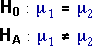
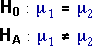

| Equal means? |  |
| Equal standard deviations? |
Model for two groups
In an earlier chapter of CAST, we described a model for two-group numerical data. It was assumed that the data in each group was a random sample from a normal population,
| Group 1: Y ~ normal (µ1 , σ1) |
| Group 2: Y ~ normal (µ2 , σ2) |
Are the groups identical?
If there is no difference between the two groups, then the two means must be equal and the two standard deviations must also be the same. These conditions correspond to the two pairs of hypotheses,
| Equal means? |  |
| Equal standard deviations? |
Of the two, equality of the means is of most practical importance — a difference between the means often corresponds to one group being 'better' or 'worse' than the other. We have already described a t-test to assess whether the two means are the same.
In the later pages of this section, we will develop a hypothesis test for equality of the standard deviations (or equivalently the variances) in two groups.
Calcium content of salt
Chlorine is manufactured from raw salt dissolved in water to create a brine solution. The raw salt usually contains impurities and various trace elements such as calcium and magnesium. The diagram below shows calcium content (ppm) in salt samples from two different supply sources.
The sliders under the diagram adjust the four parameters of the most general normal model. Click Best fit to set them to the sample mean and standard deviation in both groups.
Could the underlying standard deviations be the same? Click the checkbox Equal St Devn then click Best fit again. Is this model also consistent with the data? The following pages develop a hypothesis test to answer this question.